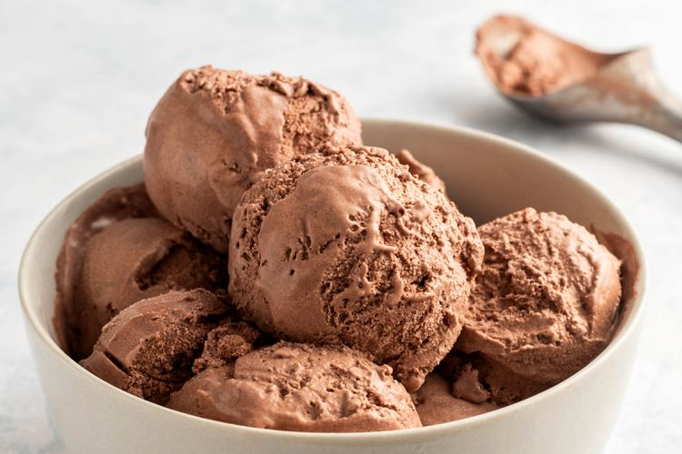

This chocolate ice cream recipe has only five basic ingredients and can be put together in just a few minutes.
Recipe by The Spruce Eats
In this recipe, cocoa powder is combined with the rest of the ingredients, which include whole milk, sugar, heavy cream, and vanilla extract, which keeps it simple. Although delicious served as is, there are many mix-ins that you can add to this recipe to customize the flavor. Fold in a ribbon of chocolate syrup after the ice cream is frozen, add a handful of chocolate chips, or even toss in a few roughly chopped chocolate sandwich cookies to up the chocolate factor to your liking.
Ingredients
- 1 1/2 cups whole milk
- 1/2 cup unsweetened cocoa powder
- 1 cup granulated sugar
- 2 cups heavy cream
- 1 teaspon vanilla extract
Steps
Here's a very brief overview of what you can expect when you make homemade chocolate ice cream:
- Gather the ingredients.
- Whisk together the milk, cocoa powder, and sugar. Whisk until the sugar and cocoa completely dissolve.
- In a large bowl, beat the heavy cream until it forms stiff peaks. Fold the whipped cream along with the vanilla extract into the cocoa powder mixture.
- Refrigerate the mixture for at least 30 minutes so it is completely cold. This will help it freeze faster, improve the texture, and allow the cocoa powder to become fully hydrated by the milk and cream.
- Give the ice cream base one more gentle stir and freeze according to the directions of your ice cream maker—about 1 1/2 to 2 hours.
- Store your ice cream in an airtight plastic container in the back of the freezer. This will help preserve the flavor and texture of the finished ice cream. You can serve the chocolate ice cream right from the ice cream maker, but it will have the texture of soft serve. Freezing for an hour before serving will create a firmer texture.